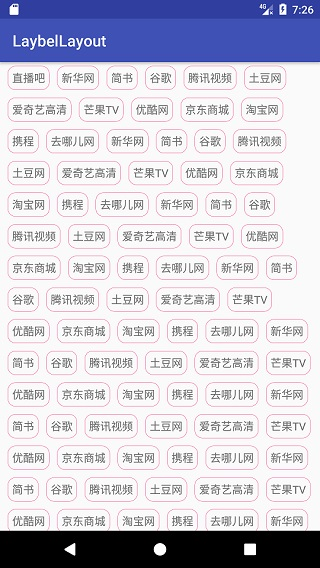

引子
Android入过门的童鞋们都知道，它本身自带的视图有时候是无法满足我们那么多开发需求的，有时候需要我们去自己定义一些视图来丰富手机的交互体验。
大家都知道，自定义View无非就是几种情况
- 利用已有控件进行组合
- 继承 ViewGroup 写布局
- 继承 View 画控件
第一种是最简单的，相当于扩展已有功能，一般情况下是不用自己实现测量绘制等的。
第二种复杂点，需要自己实现测量和布局，还有可能还要自己支持 wrap_content
第三种是主要实现绘制功能，主要难点在绘制
本文将讲述上述第二种，也就是继承 ViewGroup 的方式，剖析自动换行布局 LaybelLayout 的实现原理。
Github项目传送门
LaybelLayout
继承自 ViewGroup ，主要实现一个功能，那就是不管多少个子View放里面，占满 LaybelLayout 的宽带时，就要自动切换到下一行。子View的宽高都是不确定的，需要这个控件去自动测量和选择换行的标准。效果如下图所示

有几个技术点需要注意一下：
1，继承自 ViewGroup 的控件，如果不添加 wrap_content 功能，则 wrap_content 和 match_parent 效果是一样的
2，需要测量子View，和自身的 padding ，和自身的宽度作比较，确定哪些子View在哪些行
3，需要摆放子View，测量完之后还需要将子View摆放在相应的位置
4，让子View支持 margin 外边距
功能
默认 LaybelLayout 的子View是 TextView，我们外层只需要传一个字符串数组进去就可以了，这也能满足大部分开发的需求了。如果觉得子View只是一个TextView，无法满足需求，可以重写 LaybelLayout 的 public View getView()方法去自定义子View，如果需要设置点击事件，可以设置 LaybelLayout.OnItemClickListener 这个监听
思路
margin
首先要让子View支持外边距 margin ，那么需要让子View的参数设为 ViewGroup.MarginLayoutParams 或者为它的子类，下面代码片段为初始生成 TextView
重点看看布局参数的生成，使用了 generateDefaultLayoutParams() 方法，这个方法为 ViewGroup 的方法，产生的是 ViewGroup.LayoutParams 这个类，它也是所有布局参数的基类，并没有外边距 margin 功能，所以得重写它，让它生成 MarginLayoutParams，只有这个类才有外边距功能，代码如下
|
|
Measure
好，LaybelLayout 已经产生了许多子View了，接下来需要作的工作就是测量每个子View的宽和高。先把代码浏览一下，然后稍作解释
首先我对子View进行了测量。然后就进行判断，如果单个子View的宽度加上内边距已经超出了本控件的宽度，也就是代码里的 defSize > getMeasuredWidth()，此时，需要让这个子View的宽度等于本控件减去内边距之后的宽度，这样才能保证子View的宽度不会超出，才能正常显示完全子View的内容。所以让子View的参数的width直接等于defSize，然后重新测量，这个时候测量的结果就不会超出了。
layout
前面已经测量好了每个子View的宽高和本控件的宽高，现在就开始考虑怎么把它摆放在本控件里了。这里说下怎样换行吧。首先要获取子View的宽度，并对子View所占的宽度进行累加，当累加的结果超过了 LaybelLayout 本身的宽度时，则能够确定目前的这个子View是该去下一行了。由于代码有点多，这里就只讲思路。
重点就是使用 View.layout(int l, int t, int r, int b)，来进行摆放。前面有个问题还没有解决。那就是支持 wrap_content 的问题。wrap_content使用的效果应该是，子View的最大宽度作为本控件的宽度，当我们在摆放的时候，能记录每一行的宽度，把最大的那一行作为 LaybelLayout 的宽度。高度就是所有行高的累加再加上自身的 padding。
问题
当子View太多，使得 LaybelLayout 的测量高度超过了屏幕的高度时，最好让它有滑动功能，可以给它外层套一个 ScrollView
总结
这是一个相对简单的自定义View的例子，写一个这种控件可以掌握测量和摆放这两个难点，还可以掌握添加 wrap_content 的能力